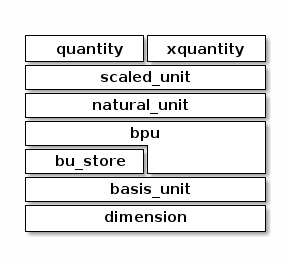

Abstraction Tower
Abstraction tower for xo-unit components.
quantity: see Quantity Reference. quantity with compile-time unit work
xquantity: quantity with unit work deferred until runtime
scaled_unit: a unit involving zero or more dimensions, and associated conversion factor.
can express result of arithmetic involving multiple scales, by reporting an outer scalefactor
a scaled unit is ‘natural’ if its outer scalefactor is 1.
quantities are represented by associating a natural scaled_unit instance
scaled_units are closed under multiplication and division.
multiplication and division commit to a single
basis_unitfor each dimension.
natural_unit: a unit involving zero or more dimensions, and at most one scale per dimension. A quantity instance is always represented as a dimensionless multiple of a natural unit
natural_units are not closed under multiplication and division. (for example consider
xo::qty::qty::foot * xo::qty::qty::meter)
bpu: BPU.
A rational (usually integer) power of a basis unit. Has a single dimension.
bu_store: Basis Unit Store.
Associates basis units with abbreviations.
For example
bu::kilogram=>"kg"basis_unit: Basis Unit Reference.
A unit with a single dimension and scale.
dimension: Dimension.
identifies a dimension, such as mass or time.
Representation
Worked example using xo::qty::quantity
1#include "xo/unit/quantity.hpp"
2...
3namespace q = xo::qty::qty;
4
5// 7.55km.min^-2
6quantity qty1 = 7.55 * q::kilometer / (q::minute * q::minute);
![object qty1<<quantity>>
qty1 : scale = 7.55
rectangle {
object km_per_min2<<natural_unit>>
km_per_min2 : n_bpu = 2
km_per_min2 : bpu[0] = km
km_per_min2 : bpu[1] = per_min
object km<<bpu>>
km : native_dim = dim.mass
km : scalefactor = 1000/1
km : power = 1
object per_min2<<bpu>>
per_min2 : native_dim = dim.time
per_min2 : scalefactor = 60/1
per_min2 : power = -2
qty1 o-- km_per_min2 : s_unit (static constexpr)
km_per_min2 *-- km
km_per_min2 *-- per_min2
}](_images/plantuml-34bb0e0e26d1d2ab1ba50dfe5b03b1d4ea933860.png)
representation for quantity 7.55km.min^-2
1// 123ng
2quantity qty2 = q::nanograms(123);
{kind=link}
representation for quantity 123 nanograms
1// (123*7.55) ng.km.min^-2
2quantity qty3 = qty2 * qty1;
![object qty3<<quantity>>
qty3 : scale = 928.65
rectangle {
object ng_km_min2_unit<<natural_unit>>
ng_km_min2_unit : n_bpu = 3
ng_km_min2_unit : bpu[0] = ng
ng_km_min2_unit : bpu[1] = km
ng_km_min2_unit : bpu[2] = per_min2
object ng<<bpu>>
ng : native_dim = dim::mass
ng : scalefactor = 1/10^9
ng : power = 1
object km<<bpu>>
km : native_dim = dim::distance
km : scalefactor = 1000/1
km : power = 1
object per_min2<<bpu>>
per_min2 : native_dim = dim::time
per_min2 : scalefactor = 60/1
per_min2 : power = -2
qty3 o-- ng_km_min2_unit : s_unit (static constexpr)
ng_km_min2_unit *-- ng
ng_km_min2_unit *-- km
ng_km_min2_unit *-- per_min2
}](_images/plantuml-23c1a4d1bdb33030c1910c72499666fd045966e6.png)
quantity 928.65 ng.km.min^-2
1namespace u = xo::qty::u;
2
3// (123*7.55) ng.km.min^-2 ==> 2.57958e-10kg.m.s^-2
4
5constexpr auto newton = u::kilogram * u::meter / (u::second * u::second);
6
7quantity<newton> qty3b = qty3;
8
9// quantity qty3b = qty3.rescale_ext<newton>();
![object qty3b<<quantity>>
qty3b : scale = 2.59758e-10
rectangle {
object kg_m_s2_unit<<natural_unit>>
kg_m_s2_unit : n_bpu = 3
kg_m_s2_unit : bpu[0] = kg
kg_m_s2_unit : bpu[1] = m
kg_m_s2_unit : bpu[2] = per_s2
object kg<<bpu>>
kg : native_dim = dim::mass
kg : scalefactor = 1000/1
kg : power = 1
object m<<bpu>>
m : native_dim = dim::distance
m : scalefactor = 1/1
m : power = 1
object per_s2<<bpu>>
per_s2 : native_dim = dim::time
per_s2 : scalefactor = 1/1
per_s2 : power = -2
qty3b o-- kg_m_s2_unit : s_unit (static constexpr)
kg_m_s2_unit *-- kg
kg_m_s2_unit *-- m
kg_m_s2_unit *-- per_s2
}](_images/plantuml-61f42cb8b298fa2dd76fd28056839fb39c0ec238.png)
quantity 928.65 ng.km.min^-2